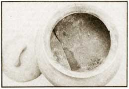
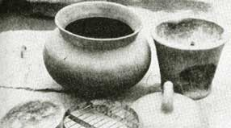

Here in the Philippines, life has come full circle.
Two or three generations ago, most Filipino town and city dwellers cooked their meals over wood fires (or an occasional gas stove). After World War II, however, along came the electric age, gas and liquid kerosene stoves, alcohol burners, and all sorts of modern cooking appliances. Then, during the energy crunch of 1973 and 1974, wood was once again rediscovered. The oil supply situation has eased somewhat since the "crisis" but-because the cost of cooking gas remains high-a small-scale renaissance of old methods is now taking place in some family kitchens.
Back in 1974 I did some experimenting along these tines myself. To be specific, I put together a device from a diagram in a book on the life of Maria Orosa (who is to Philippine cookery what Betty Crocker is to American). This gadget-a palayok (pot) oven-is intended to absorb heat from a charcoal-fed Japanese hibachi stove. I made mine entirely of local materials; a large ordinary clay pot with a cover, a wire rack, a piece of thin sheet metal cut to fit the vessel's bottom, and a piece of aluminum foil placed just below the lid to act as a heat reflector.
Less than a decade ago, cookers of this type were easily purchased from any market or neighborhood sari-sari store. (According to National Geographic for September 1966, the sari-sari store begins as a small stand which carries staple foods, sewing needs, soft drinks, etc.... and often expands into a supermarket or other full-scale business. -MOTHER.) The advent of civilization with its gas and butane stoves and kerosene burners has pushed the old-style ovens out of population centers . . . but now that I've rediscovered the traditional cooking/baking unit, I've located dealers who tell me they can supply the oven's raw materials in any quantities I want.
When I first began testing my palayok oven, I used it occasionally to bake cookies, bread, and other flour-based products. It took some time to get up to the proper heat, but-once launched-did a good job on anything placed in it. Then I more or less forgot about the device, only to rediscover it three months later . . . near the end of November 1974, when a late-season typhoon hit Manila (capital of the Philippine Republic) and a long power brownout taught me a new use for this old kitchen tool.
At the time of the November typhoon, we were entertaining a Filipino couple, Vince and Nene Cortez, who had just returned from the United States for a vacation in Manila. As the electric power blinked off, Vince mentioned that-about this time in Oxnard, California-it was customary for him and his family to sit down and demolish a Thanksgiving turkey.
"To be thankful is fine . . . to demolish divine," I said. "But kindly inform yours truly, first, where a turkey can be obtained during this typhoon, and second, how the same can be cooked without electricity . . . without a gas oven, even."
"I shall supply the turkey," Vince told me. "You supply the cooking fuel."
"In this weather you'll get a turkey?" I jeered. "They're probably flying all over creation."
"He means a cold turkey, stupid," said my wife, Leonor. "Refrigerated. Frozen."
"Oh," I said. "I thought you were talking about a live one."
So Vince went out in the rain and the wind and, so help me, soon came back with a huge turkey. Not only that, he also brought some cranberry sauce . . . (which he said is what Americans generally like to eat with such fowl).
Very good. We dressed and prepared the bird far the oven (we stuffed it, American style, with bread, instead of the customary chorizo de Bilbao- Spanish sausage-and other normal ingredients) . . . and while we were doing so, I remarked cheerfully, "If this typhoon is anything like the one we had a 1970, we can expect the current back in three weeks. Would you like to toast the turkey over hot coals? In that case, we'll have to hold off awhile until the rain and the wind ease up somewhat."
"Maybe we'd better wait till next Thanksgiving, yes?" suggested Nene Cortez.
"No," s aid Vince. "Our visas expire next month. We'll have to do the turkey now."
It was then I remembered my palayok oven. I grabbed the prepared turkey and-by dint of pressure, prayer, and more pressure-somehow squeezed the whole fowl into the pot. We swabbed the bird with margarine, threw in a few handfuls of tamarind leaves from the wet backyard tree, and placed the pot over hot charcoal in the kitchen pasillo (passage).
Then we waited, while the wind howled, rattled saucepans, blew down the clothesline, tumbled two of my papaya trees, and sheared some sheet iron off our water tank. Within an hour, delicious odors been to rise from the pot. Another hour, and I peeped in to see the bird slowly turning a light golden brown. By six o'clock the turkey was quivering from pokes of Vincent's fork. The bird seemed almost ready for the dining table, except that-somehow-it still looked a trifle underdone. Somehow it didn't fit my concept of Colonial roast turkey . . . the ideal which so proudly we hail in the pages of Good Housekeeping, Cosmopolitan, Oui, and Playboy. It was tender enough, and flavorful enough . . . but brown it was not.
What to do? Should I toss the turkey back into the freezer and wait far a change of electrical weather? Should I try roasting it-despite its huge size-directly over the coals, and risk a burned spot here, a reddish-raw patch there?
I asked Vince Cortez for his comments and he said, "I took cars of the turkey, I took care of the dressing. You handle the cookery . . . and that goes for browning, too."
Luckily, before I could agonize over the problem much longer, I was saved by the bell. The power company flashed the lights back on, the refrigerator bucked like a wounded bronco, and the electric oven tingled. Quickly I thrust the turkey into the automatic roaster, flipped the ON switch to broil, and prayed that the current would stay with us long enough to brawn the bird. (It did . . . not just for a while, but for the rest of the night.)
And so the turkey was done to a golden hue . . . but over the dinner table I stoutly defended my palayok oven. Regardless of electricity's virtues, I claimed, there was a lot to be said for the native pot cooker. My argument, of course, was useless. Everyone naturally believed that the primitive device had played only a minor role in putting our meal on the table. The fact that the electric roaster had revived to put just the final tint on the bird made little impression on them.
The truth didn't emerge until three days later, when my wife decided to try her luck with a smaller turkey . . . not in the palayok oven, but in the electric roaster. No American stuffing this time, either. The second bird was filled with chicken dressing (an old family recipe which included Spanish sausage, pork cubes, and spices).
Well, three hours of conking later, the noble bird tasted like chicken, not turkey. And-whereas the pot oven product had sliced as fine and tantalizingly as roast pork-the roaster's version was tough and resisted carving.
To produce this inferior result, the electric roaster had burned approximately $1.80 worth of current to cook the small turkey. My pot oven, in contrast, had needed only about 15 cents' worth of charcoal (and didn't even consume all that) for the larger bird.
I fired up what was left of the charcoal the next day to grill a kilo (a little over 2 pounds) of park chops . . . and, when that job was finished, I still had enough fuel on hand to broil some sweet corn, if there'd been any. There wasn't, unfortunately. Half a hectare (I-1/4 acres) of my farm's corn-with the ears only a few weeks from maturity-had been beaten into terra firma, casualties of the same typhoon that had knocked out our power a few days before. But that's another story.
|
 LEFT: Interior of a pot oven (note metal liner). ABOVE: The same cooker, with reflector, grill, lid, and hibachi. |
 |
|